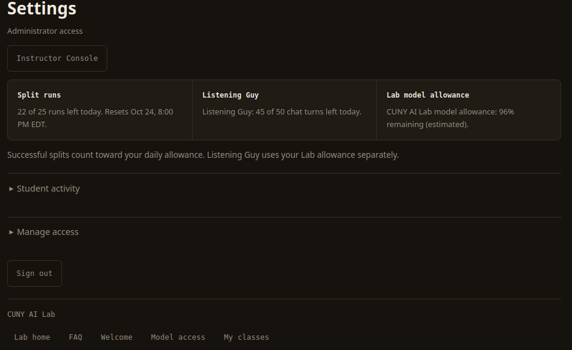

Splitter Basics
The Splitter tab holds your recordings and mixer. Workspace brings together a course's shared work, and Settings shows your remaining daily allowances.
The Three Tabs
Open Splitter to choose audio, select a split, and work with recordings in the Session Rack. Class Folders appear below the rack. The Class Workspace shows the roster, usage, and folders for a selected course. Students can open courses they belong to; instructors can open courses they teach.
Settings shows your daily allowances and links back to the Lab. You can also sign out there. Instructors can open the Instructor Console from Settings to edit teaching instructions.

The Session Rack
The Session Rack lists your splits with the newest first. Open a recording to expand its mixer. The other recordings collapse to title rows, where their actions remain available.

A status badge shows whether a split is queued, processing, ready, or failed. READY means you can open the mixer and listen. A failed split releases its place in your daily allowance.
Rename changes a title in the rack and shared folders while keeping the audio intact. Export downloads the stems; Export & Sharing explains the available downloads. On a course split, + Folder adds the recording to one of your course folders. Copy link creates a public page for the audio, and Stop sharing revokes that link.
Delete hides your split and blocks further access after the server accepts the request. Cleanup removes its private content after any active processing settles; audio still used by another run is preserved. Download what you need first. Inside an expanded entry, Refresh class notes reloads classmates' notes. Class workspace opens the course that owns the split.
Reading the Mixer

The transport row holds play and pause, the elapsed and total time, the scrub bar, and + Note. The speed controls offer 0.5×, 0.75×, and 1× playback without changing pitch. Each stem has its own colored label, waveform, Solo and Mute buttons, and download arrow. When you solo a stem, its button reads Only.
A vertical playhead crosses the waveforms to mark the current time. Click a waveform to jump to a passage, or click a note's timestamp below the stems. Listening Guy sits below the notes in a collapsible panel; click its header to open the guide and chat. The Mixer page explains these controls and their keyboard shortcuts.
Class Folders
Class Folders lists folders that an instructor has shared with one of your courses. Expand a folder to inspect its recordings, or press Load all to put them in your rack for listening. The app checks course membership before it grants access. A folder disappears from your view when you leave its course.
Footer
The footer names Demucs as the separation model and links instructors to the Instructor Console. Use Report a bug to send a description after CUNY Login, or choose No account? and enter your first name, last name, and a .edu email address. The form adds page and release information and does not automatically attach audio, notes, or conversations. See Privacy & Limits for report storage and delivery.